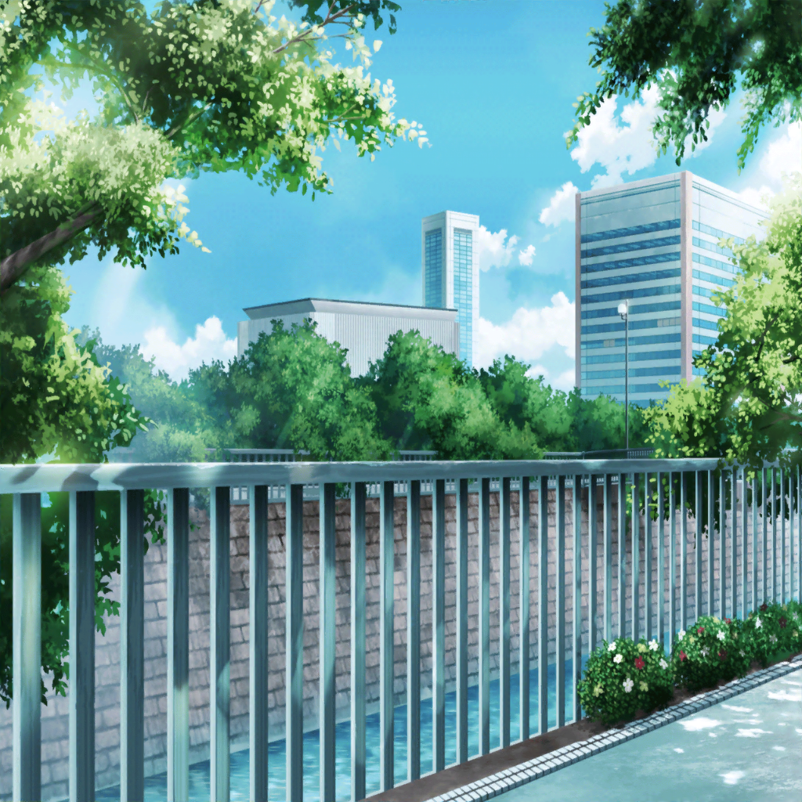

通学路
こころ
ふっふ〜ん♪ ふっふ〜ん♪
今日は〜いったい〜っ、
どんなこと、しようかしらっ
こころ
あ！ そこのあなたっ。
ねえ、なにがいいと思うっ？
花咲川の生徒１
えっ、えっ、急になんですか？
こころ
なにって決まってるじゃない。
楽しいことよ！
このあたしが楽しいことを探さないで、なにするの？
花咲川の生徒１
なにって、えぇっ
花咲川の生徒２
あ。大丈夫だよ、弦巻さんっていつもこうだから。
日課の『楽しいこと探し』
こころ
残念。思いつかないみたいね。
でも大丈夫、ほかの人にも聞いてみるわっ。
どうもありがとう！！
こころ
……って、そうだわ！
いーーこと思いついた！
ダッシュ、ダーッシュ！！
花咲川の生徒１
行っちゃった……なんか……すごい人だね……
なんで楽しいこと探してるんだろ……
花咲川の生徒２
さあ……
あの人の考えてることわかる生徒って、
この学園にはいない気がする……
 駅前
駅前
こころ
ら〜〜♪ ららら〜〜♪ らららら〜♪
通行人１
！？ なに、あの女子高生。
アカペラで急に歌いだしたけど……
こころ
ら〜♪ ……うーーん？ まだ楽しくないわ。
なにか足りないのかしら？
このままじゃ世界を笑顔にできないわ
通行人２
路上ミュージシャン……じゃないよね？
……って、あっ、大丈夫？
？？？
ご、ごめんなさい……っ。
私っ、道に迷って……。こ、この近くに楽器屋さんが
あるって聞いて……
通行人
あ。それなら……
——！？
こころ
ふっふっふ……
いいもの、みーーつけた！！！！
？？？
えっ、えっ！？
あっ、制服……花咲川の……？
こころ
そうよ！ あたしは花咲川女子学園高等部１年、弦巻こころ！
あなたの名前は？ その荷物って楽器でしょ？
今、楽器店について聞いていたわよね？
花音
１年生……
あ……っ。ま、松原花音と、いいます。
たっ、たしかに、楽器……ですが……
こころ
やっぱり！ 花音ね！ ありがとう！
あたし、今歌ってるの。
だから一緒に演奏してくれるっ？
花音
へ……？
あっ、待って、離して、ください……っ。
私、このスネアドラムはもう、売るつもりで……
こころ
売っちゃうの？ なんで？
あたしと一緒に演奏するんだから、
売るのなんてやめましょうよ！
花音
そ、そんな……めちゃくちゃな……っ
わ、私、もう行くから……
こころ
めちゃくちゃじゃないわ！
だってあなたも、世界を笑顔にしたいでしょ？
花音
い、意味がわかりません……っ！
美咲
おかしいな。指定の時間過ぎてる……
なーんかこのバイト募集サイト、ちょっと怪しいし、
やっぱ辞めておこうかな……？
美咲
担当者の電話番号……
もしもし？ 奥沢です
バイト担当者
『もしもし？ すみませーん。
バイト希望の方ですよね。ちょっと遅れていて。
あと５分待って貰えますか？』
美咲
いいですけど……
あの、バイトの詳しい内容とか
サイトに何も書いてなかったんですが
バイト担当者
『ああ！ 冬はあったかくて、ちょっと夏は蒸しますけど。
なに、怪しいバイトじゃないですよ！
高校生OKなくらいですし』
美咲
ちょっと……蒸す？
……ん？
取り巻き１
きゃーーーっ！
薫さまっ！ 握手してくださいっ！
薫
ふ……。構わないが子猫ちゃん……
君のその透き通る白い肌を傷つけてしまわないか心配だ……
いいかな？ そっと……、いくからね？
取り巻き２
……あぁ……
取り巻き３
ああっ、また失神者が……っ
薫
ああ……！ また……私の美しさのせいで……！
かのシェイクスピア曰く、これは運命なのか。
神は我々を人間にするために、何らかの欠点を与えるのか……！
美咲
え……なにあれ！？
——って、んん！？
こころ
らーららららーーー♪
ほら花音、あなたのドラムで、もっともっと
盛り上げなきゃ！
花音
ひ〜んっ、もう許してください〜っ
美咲
うわ……弦巻こころ……
美咲
（花咲川女子学園の『異空間』と名高い奇人。
同じクラスだけど、
こんな人通りの多い場所でもやりたい放題って……）
美咲
なんか今日は、変なものを見る日かも……
こころ
どうしたの花音。緊張してるの？
ここで、今からすぐに演奏するのよ！
花音
き、緊張……します……っ。だって私っ、
一人でも上手に叩けないのに……
こ、こ、こんな人前で……っ！
こころ
？ それはそうよ？
一人で演奏しても、
上手く叩けないなんて当たり前よ
こころ
だって、あなたが上手いかどうかを
どうしてあなたが決めるの？
人に聴いてもらわなきゃ、わからないじゃない！
花音
え……
そ、それは……私……
で、でも……そんな勇気、なかった……し……
こころ
勇気なら、あたしがあげるわっ！
花音
——！！
こころ
あたし、今ここで歌うことが、とっても楽しいの！
あなたも一緒にドラムを叩いてくれたら、
もっともーっと、楽しくなるっ！
こころ
楽しくなったら、あなたも笑顔になる！
そうしたらね、上手いとか下手とか、
そんなこと、すぐどうでも良くなっちゃうんだからっ
花音
楽しくなったら……下手とか……どうでも、いい……
こころ
そうよ！ 楽しくなくっちゃ意味ないわ！
だから、花音、あなたが必要なのっ。
さあさあさあっ！
バイトの担当者
すみません。えっと、その服装……
研修希望の奥沢さんですか？
美咲
あっ、はい、そうです。よろしくお願いします
花音
で、でもやっぱり、恥ずかしいですっ。ひ〜〜んっ
こころ
わかったわ！ ほら、あたしの勇気、
もっともっと、花音に届け〜っ！
美咲
（あ、あの子、大丈夫かな……？）